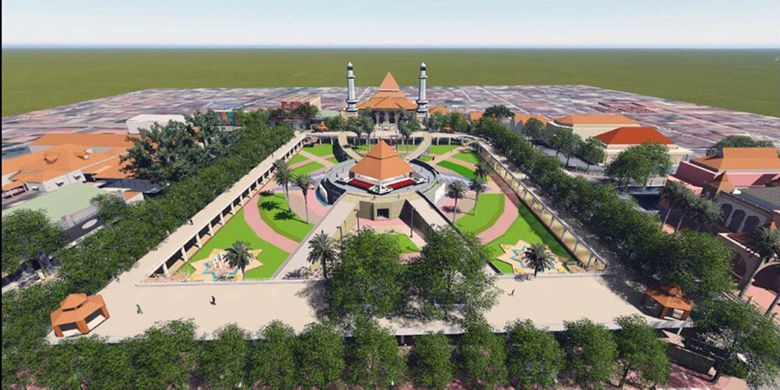

Sejarah
Thomas Stamford Raffles dalam bukunya, The History of Java mengungkapkan bahwa nama Gresik berasal dari kata giri gisik, yang berarti gunung di tepi pantai, merujuk pada topografi kabupaten yang berada dipinggir pantai. Di Gresik juga pernah dikenal sebuah nama tempat bernama Jaratan. Nama ini secara historis melekat pada peta buatan pelayar Belanda pada awal abad ke-7 M. Nama ini dianggap sebagai salah satu dari 2 buah pelabuhan yang ada di Gresik, lokasinya berada di Muara Bengawan Solo tepatnya di Pulau Mangare, Desa Watu Agung.
Pada awal Kemerdekaan Indonesia, Kabupaten Gresik hanyalah sebuah kawedanan dibawah Kabupaten Surabaya. Didirikannya Pabrik Semen Gresik pada tahun 1953 merupakan titik awal industrialisasi di Gresik. Semula Kabupaten Gresik ini bernama Kabupaten Surabaya (masuk wilayah administrasi Surabaya). Memasuki dilaksanakannya PP Nomor 38 Tahun 1974, seluruh kegiatan pemerintahan mulai berangsur-angsur dipindahkan ke Kabupaten Gresik. Kabupaten Gresik terkenal sebagai Kota Walisongo, hal ini ditandai dengan penggalian sejarah yang berkenaan dengan peranan dan keberadaan para wali yang makamnya berada di Kabupaten Gresik yaitu, Sunan Giri dan Syekh Maulana Malik Ibrahim. Disamping itu, Kabupaten Gresik disebut sebagai Kota Santri. Selain itu Gresik sudah menjadi salah satu pelabuhan utama dan kota dagang yang cukup penting sejak abad ke-14, serta menjadi tempat persinggahan kapal-kapal dari Maluku menuju Sumatra dan daratan Asia (termasuk India dan Persia). Hal ini berlanjut hingga era VOC.
Geografis

Lokasi Kabupaten Gresik terletak di sebelah barat laut Kota Surabaya, ibukota Provinsi Jawa Timur. Pusat Pemerintahan Kabupaten Gresik yaitu Kecamatan Gresik berada 20 km sebelah utara Kota Surabaya. Kabupaten Gresik terbagi dalam 18 kecamatan dan terdiri dari 330 desa dan 26 kelurahan. Secara geografis, wilayah Kabupaten Gresik terletak antara 112° - 113° BT dan 7° - 8° LS dan merupakan dataran rendah dengan ketinggian 2 - 12 meter di atas permukaan air laut, kecuali Kecamatan Panceng yang mempunyai ketinggian 25 meter di atas permukaan laut.
Sebagian wilayah Kabupaten Gresik merupakan daerah pesisir pantai, yaitu memanjang mulai dari Kecamatan Kebomas, Gresik, Manyar, Bungah, Sidayu, Ujung Pangkah dan Panceng serta Kecamatan Sangkapura dan Tambak yang lokasinya berada di Pulau Bawean. Jenis tanah di wilayah Kabupaten Gresik sebagian besar merupakan tanah kapur yang relatif tandus. Ketinggian tanah di Wilayah Kabupaten Gresik berada pada 0 – 500 meter di atas permukaan laut (mdpl) pada elevasi terendah terdapat di daerah sekitar muara Sungai Bengawan Solo dan Kali Lamong. Kondisi topografi pada Kabupaten Gresik bervariasi pada kemiringan 0-2 %, 3-15 %, dan 16-40% serta lebih dari 40 %. Sebagian besar mempunyai kemiringan 0-2 % mempunyai luas + 94.613,00 Ha atau sekitar 80,59 %, sedangkan wilayah yang mempunyai kemiringan lebih dari 40 % lebih sedikit + 1.072,23 Ha atau sekitar 0,91%.
Wisata
Ada satu hal yang harus diketahui dari Gresik yakni objek wisata disana sudah makin berbenah. Meski sebelumnya, Kabupaten Gresik identik dengan kota industri, namun sekarang banyak tempat wisata yang bisa dikunjungi dan tidak kalah bagusnya dengan kota lain. Ada banyak spot foto kekinian dan cantik yang bisa ditemukan. Juga dengan pantai yang berpotensi besar untuk bisa dikembangkan. Terdapat juga wisata pulau, wisata bukit batu dan wisata alam lainnya. Dan salah satu diantaranya adalah wisata Pantai Dalegan dan Pulau Bawean.
Pantai Dalegan
Pantai ini terletak di Desa Delegan, Kecamatan Panceng dari Kecamatan Gresik berjarak sekitar 40 km, setelah dari Sidayu dan melewati Hutan Jati Panceng ada papan penunjuk arah menunjukkan wisata Pantai Delegan, dari jalan arteri masuk ke utara sekitar 1 km sudah sampai di lokasi. Pantai Delegan sangat cocok untuk wisata pantai, lomba perahu atau memancing. Pantai berpasir putih ini setiap bulan Agustus diadakan atraksi wisata berupa perlombaan yang terkait dengan wisata bahari. Pantai Delegan dibuka untuk umum sejak tahun 2003.
Pulau Bawean
Pulau Bawean merupakan salah satu Pulau yang ada di Kabupaten Gresik. Diantara tujuan wisata Bawean adalah: Noko Gili, Pantai Bayangkara, Pantai Tanjunggaang, Pulau China, Pantai Selayar, Danau Kastoba, dll. Pulau ini terdiri atas dua kecamatan, yaitu Kecamatan Sangkapura dan Kecamatan Tambak. Penduduknya berjumlah sekitar 107.000 jiwa dengan mayoritas suku Bawean serta perpaduan beberapa suku dari Jawa, Madura, Kalimantan, Sulawesi, dan Sumatra yang turut mempengaruhi budaya dan bahasanya. Mata pencaharian utama penduduknya adalah nelayan dan petani serta pekerja rantauan di Malaysia dan Singapura. Orang Bawean ada pula yang menetap di Australia dan Vietnam.